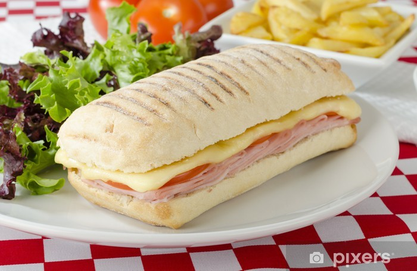

Panini recipe:

Panini with cheese and ham
Ingredients:
- Panini bread
- Ham
- Cheese
- Mayonaise
- Carrot
- Little tomatoes
- Salad
Steps:
- Cut open the bread in it's length.
- Layer a slice of cheese and a slice of ham on top of the bread.
- Put the panini in the preheated iron for ~2mins.
- Take a plate and put some mayo on it.
- Cut the carrot and the tomatoes to your choosing.
- Lay them on the plate along with some salad.
- Enjoy!